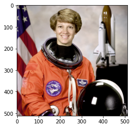
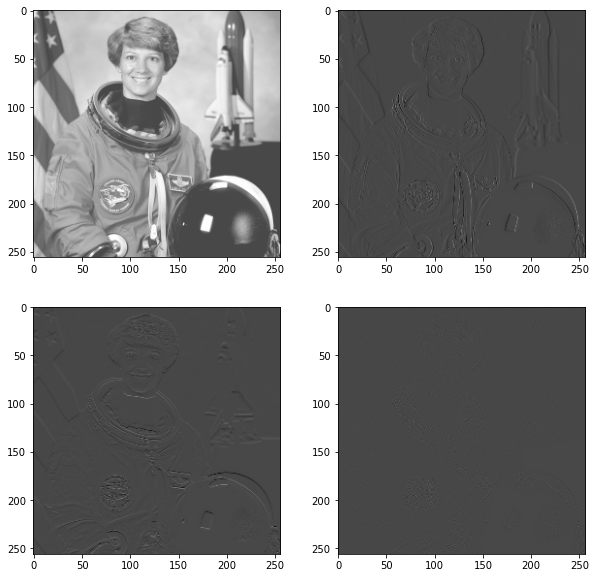

Reshape
Contents
import treex
import jax
import jax.numpy as jnp
import numpy as np
from skimage import data
import matplotlib.pyplot as plt
from einops import repeat
img = data.astronaut()
fig, ax = plt.subplots()
ax.imshow(img)
plt.show()

Reshape#
def squeeze(x, factor=2):
assert x.ndim == 4
b, h, w, c = x.shape
assert h % factor == 0
assert w % factor == 0
x = jnp.reshape(x, (b, h//factor, factor, w//factor, factor, c))
x = jnp.transpose(x, axes=(0, 1, 3, 5, 2, 4))
x = jnp.reshape(x, (b, h//factor, w//factor, c * factor **2))
return x
def unsqueeze(x, factor=2):
assert x.ndim == 4
b, h, w, c = x.shape
x = jnp.reshape(x, (b, h, w, c // factor ** 2, factor, factor))
x = jnp.transpose(x, axes=(0, 1, 4, 2, 5, 3))
x = jnp.reshape(x, (b, h*factor, w*factor, c // factor ** 2))
return x
x = repeat(img, "... -> 1 ...")
img_squeeze = squeeze(x)
img_squeeze.shape
x_orig = unsqueeze(img_squeeze)
np.testing.assert_array_equal(x, x_orig)
fig, axs = plt.subplots(nrows=2, ncols=2, figsize=(10,10))
axs[0, 0].imshow(img_squeeze[0, ..., :3])
axs[0, 1].imshow(img_squeeze[0, ..., 3:6])
axs[1, 0].imshow(img_squeeze[0, ..., 6:9])
axs[1, 1].imshow(img_squeeze[0, ..., 9:12])
plt.show()

DownSample#
b, h, w, c = x.shape
kernel = np.ones((4, 1, 2, 2))
kernel[1, 0, 0, 1] = -1
kernel[1, 0, 1, 1] = -1
kernel[2, 0, 1, 0] = -1
kernel[2, 0, 1, 1] = -1
kernel[3, 0, 1, 0] = -1
kernel[3, 0, 0, 1] = -1
kernel = np.concatenate([kernel] * 3, 0).astype(np.float32)
# kernel = jnp.asarray(kernel).transpose([1, 2, 3, 0])
kernel = jnp.asarray(kernel).transpose([1,0,2,3])
kernel.shape
(1, 12, 2, 2)
print(img.shape)
x_torch = x.transpose([0, 3, 1, 2]).astype(jnp.float32)
x_torch.shape
(512, 512, 3)
(1, 3, 512, 512)
# NHWC layout
img = jnp.zeros((1, 200, 200, 3), dtype=jnp.float32)
for k in range(3):
x = 30 + 60*k
y = 20 + 60*k
img = img.at[0, x:x+10, y:y+10, k].set(1.0)
print("out shape: ", img.shape, " <-- original shape")
print("Original Image:")
plt.imshow(img[0]);
out shape: (1, 200, 200, 3) <-- original shape
Original Image:
img[0].min(), img[1].max()
(DeviceArray(0., dtype=float32), DeviceArray(1., dtype=float32))
# 2D kernel - HWIO layout
kernel = jnp.zeros((3, 3, 3, 3), dtype=jnp.float32)
kernel += jnp.array([[1, 1, 0],
[1, 0,-1],
[0,-1,-1]])[:, :, jnp.newaxis, jnp.newaxis]
print("Edge Conv kernel:")
plt.imshow(kernel[:, :, 0, 0]);
Edge Conv kernel:
dn = lax.conv_dimension_numbers(img.shape, # only ndim matters, not shape
kernel.shape, # only ndim matters, not shape
('NHWC', 'HWIO', 'NHWC')) # the important bit
print(dn)
ConvDimensionNumbers(lhs_spec=(0, 3, 1, 2), rhs_spec=(3, 2, 0, 1), out_spec=(0, 3, 1, 2))
out = lax.conv_general_dilated(img, # lhs = image tensor
kernel, # rhs = conv kernel tensor
(2,2), # window strides
'SAME', # padding mode
(1,1), # lhs/image dilation
(1,1), # rhs/kernel dilation
dn) # dimension_numbers = lhs, rhs, out dimension permutation
print("out shape: ", out.shape, " <-- half the size of above")
plt.figure(figsize=(5,5))
print("First output channel:")
plt.imshow(np.array(out)[0,:,:,0]);
out shape: (1, 100, 100, 3) <-- half the size of above
First output channel:
out.min(), out.max()
(DeviceArray(-2., dtype=float32), DeviceArray(3., dtype=float32))
Transpose#
kernel.shape
(3, 3, 3, 3)
# The following is equivalent to tensorflow:
# N,H,W,C = img.shape
# out = tf.nn.conv2d_transpose(img, kernel, (N,2*H,2*W,C), (1,2,2,1))
# transposed conv = 180deg kernel roation plus LHS dilation
# rotate kernel 180deg:
kernel_rot = kernel#jnp.rot90(jnp.rot90(kernel, axes=(0,1)), axes=(0,1))
# need a custom output padding:
padding = ((2, 1), (2, 1))
img_ori = lax.conv_general_dilated(out, # lhs = image tensor
kernel, # rhs = conv kernel tensor
(1,1), # window strides
padding, # padding mode
(2,2), # lhs/image dilation
(1,1), # rhs/kernel dilation
dn) # dimension_numbers = lhs, rhs, out dimension permutation
print("out shape: ", img_ori.shape, "<-- larger than original!")
plt.figure(figsize=(5,5))
print("First output channel:")
print("Original Image:")
plt.imshow(img_ori[0].astype(np.uint8));
out shape: (1, 200, 200, 3) <-- larger than original!
First output channel:
Original Image:
img_ori.min(), img_ori.max()
(DeviceArray(-12., dtype=float32), DeviceArray(9., dtype=float32))
img_ori[0].min(), img_ori[0].max(), img[0].min(), img[0].max()
(DeviceArray(-12., dtype=float32),
DeviceArray(9., dtype=float32),
DeviceArray(0., dtype=float32),
DeviceArray(1., dtype=float32))
img_ori.shape
from einops import rearrange
b, h, w, c = x.shape
kernel = np.ones((4, 1, 2, 2))
kernel[1, 0, 0, 1] = -1
kernel[1, 0, 1, 1] = -1
kernel[2, 0, 1, 0] = -1
kernel[2, 0, 1, 1] = -1
kernel[3, 0, 1, 0] = -1
kernel[3, 0, 0, 1] = -1
kernel *= 0.5
kernel = np.concatenate([kernel] * 3, 0)
# kernel = jnp.asarray(kernel).transpose([1, 2, 3, 0])
# kernel = jnp.asarray(kernel).transpose([1,0,2,3])
# kernel = repeat(kernel, "A 1 B C -> A 3 B C")
kernel = kernel.astype(np.float32)
kernel.shape
(12, 1, 2, 2)
print(img.shape)
x_torch = x.transpose([0, 3, 1, 2]).astype(jnp.float32)
x_torch.shape
(512, 512, 3)
(1, 3, 512, 512)
from jax import lax
dn = lax.conv_dimension_numbers(
x.shape, # only ndim matters, not shape
kernel.shape, # only ndim matters, not shape
('NCHW', 'OIHW', 'NCHW'),
) # the important bit
print(dn)
ConvDimensionNumbers(lhs_spec=(0, 1, 2, 3), rhs_spec=(0, 1, 2, 3), out_spec=(0, 1, 2, 3))
x_torch.shape, kernel.shape
((1, 3, 512, 512), (12, 1, 2, 2))
x_squeezed = lax.conv(
lhs=x_torch, # lhs = image tensor
rhs=kernel, # rhs = conv kernel tensor
window_strides=(2,2), # window strides
padding='SAME', # padding mode
) # dimension_numbers = lhs, rhs, out dimension permutation
---------------------------------------------------------------------------
ValueError Traceback (most recent call last)
Input In [381], in <module>
----> 1 x_squeezed = lax.conv(
2 lhs=x_torch, # lhs = image tensor
3 rhs=kernel, # rhs = conv kernel tensor
4 window_strides=(2,2), # window strides
5 padding='SAME', # padding mode
6
7 )
File ~/miniconda3/envs/sci_jax_py39/lib/python3.9/site-packages/jax/_src/lax/lax.py:1725, in conv(lhs, rhs, window_strides, padding, precision, preferred_element_type)
1703 def conv(lhs: Array, rhs: Array, window_strides: Sequence[int],
1704 padding: str, precision: PrecisionLike = None,
1705 preferred_element_type: Optional[DType] = None) -> Array:
1706 """Convenience wrapper around `conv_general_dilated`.
1707
1708 Args:
(...)
1723 An array containing the convolution result.
1724 """
-> 1725 return conv_general_dilated(lhs, rhs, window_strides, padding,
1726 precision=precision,
1727 preferred_element_type=preferred_element_type)
File ~/miniconda3/envs/sci_jax_py39/lib/python3.9/site-packages/jax/_src/lax/lax.py:631, in conv_general_dilated(lhs, rhs, window_strides, padding, lhs_dilation, rhs_dilation, dimension_numbers, feature_group_count, batch_group_count, precision, preferred_element_type)
627 effective_rhs_shape = [(k-1) * r + 1 for k, r in zip(rhs_shape, rhs_dilation)]
628 padding = padtype_to_pads(
629 np.take(lhs.shape, lhs_perm)[2:], effective_rhs_shape, # type: ignore[index]
630 window_strides, padding)
--> 631 return conv_general_dilated_p.bind(
632 lhs, rhs, window_strides=tuple(window_strides), padding=tuple(padding),
633 lhs_dilation=tuple(lhs_dilation), rhs_dilation=tuple(rhs_dilation),
634 dimension_numbers=dnums,
635 feature_group_count=feature_group_count,
636 batch_group_count=batch_group_count,
637 lhs_shape=lhs.shape, rhs_shape=rhs.shape,
638 precision=canonicalize_precision(precision),
639 preferred_element_type=preferred_element_type)
File ~/miniconda3/envs/sci_jax_py39/lib/python3.9/site-packages/jax/core.py:267, in Primitive.bind(self, *args, **params)
264 top_trace = find_top_trace(
265 args, used_axis_names(self, params) if self._dispatch_on_params else None)
266 tracers = map(top_trace.full_raise, args)
--> 267 out = top_trace.process_primitive(self, tracers, params)
268 return map(full_lower, out) if self.multiple_results else full_lower(out)
File ~/miniconda3/envs/sci_jax_py39/lib/python3.9/site-packages/jax/core.py:612, in EvalTrace.process_primitive(self, primitive, tracers, params)
611 def process_primitive(self, primitive, tracers, params):
--> 612 return primitive.impl(*tracers, **params)
File ~/miniconda3/envs/sci_jax_py39/lib/python3.9/site-packages/jax/interpreters/xla.py:275, in apply_primitive(prim, *args, **params)
273 def apply_primitive(prim, *args, **params):
274 """Impl rule that compiles and runs a single primitive 'prim' using XLA."""
--> 275 compiled_fun = xla_primitive_callable(prim, *unsafe_map(arg_spec, args), **params)
276 return compiled_fun(*args)
File ~/miniconda3/envs/sci_jax_py39/lib/python3.9/site-packages/jax/_src/util.py:195, in cache.<locals>.wrap.<locals>.wrapper(*args, **kwargs)
193 return f(*args, **kwargs)
194 else:
--> 195 return cached(config._trace_context(), *args, **kwargs)
File ~/miniconda3/envs/sci_jax_py39/lib/python3.9/site-packages/jax/_src/util.py:188, in cache.<locals>.wrap.<locals>.cached(_, *args, **kwargs)
186 @functools.lru_cache(max_size)
187 def cached(_, *args, **kwargs):
--> 188 return f(*args, **kwargs)
File ~/miniconda3/envs/sci_jax_py39/lib/python3.9/site-packages/jax/interpreters/xla.py:299, in xla_primitive_callable(prim, *arg_specs, **params)
296 return prim.bind(*args, **params)
297 return _xla_callable(lu.wrap_init(prim_fun), device, None, "prim", donated_invars,
298 *arg_specs)
--> 299 aval_out = prim.abstract_eval(*avals, **params)
300 if not prim.multiple_results:
301 handle_result = aval_to_result_handler(device, aval_out)
File ~/miniconda3/envs/sci_jax_py39/lib/python3.9/site-packages/jax/_src/lax/lax.py:2151, in standard_abstract_eval(prim, shape_rule, dtype_rule, weak_type_rule, named_shape_rule, *avals, **kwargs)
2148 return ConcreteArray(prim.impl(*[x.val for x in avals], **kwargs),
2149 weak_type=weak_type)
2150 elif least_specialized is ShapedArray:
-> 2151 return ShapedArray(shape_rule(*avals, **kwargs), dtype_rule(*avals, **kwargs),
2152 weak_type=weak_type,
2153 named_shape=named_shape_rule(*avals, **kwargs))
2154 elif least_specialized is UnshapedArray:
2155 return UnshapedArray(dtype_rule(*avals, **kwargs), weak_type=weak_type)
File ~/miniconda3/envs/sci_jax_py39/lib/python3.9/site-packages/jax/_src/lax/lax.py:2994, in _conv_general_dilated_shape_rule(lhs, rhs, window_strides, padding, lhs_dilation, rhs_dilation, dimension_numbers, feature_group_count, batch_group_count, **unused_kwargs)
2990 if not core.symbolic_equal_dim(quot, rhs.shape[dimension_numbers.rhs_spec[1]]):
2991 msg = ("conv_general_dilated lhs feature dimension size divided by "
2992 "feature_group_count must equal the rhs input feature dimension "
2993 "size, but {} // {} != {}.")
-> 2994 raise ValueError(msg.format(lhs_feature_count, feature_group_count,
2995 rhs.shape[dimension_numbers.rhs_spec[1]]))
2996 if rhs.shape[dimension_numbers.rhs_spec[0]] % feature_group_count:
2997 msg = ("conv_general_dilated rhs output feature dimension size must be a "
2998 "multiple of feature_group_count, but {} is not a multiple of {}.")
ValueError: conv_general_dilated lhs feature dimension size divided by feature_group_count must equal the rhs input feature dimension size, but 3 // 1 != 1.
x_squeezed.shape
(1, 12, 256, 256)
x_squeezed = lax.conv_general_dilated(
lhs=x_torch, # lhs = image tensor
rhs=kernel, # rhs = conv kernel tensor
window_strides=(2,2), # window strides
padding='SAME', # padding mode
lhs_dilation=(1,1), # lhs/image dilation
rhs_dilation=(1,1), # rhs/kernel dilation
dimension_numbers=dn,
feature_group_count=3
) # dimension_numbers = lhs, rhs, out dimension permutation
x_squeezed.min(), x_squeezed.max()
(DeviceArray(-601.5, dtype=float32), DeviceArray(1528.5, dtype=float32))
from sklearn.preprocessing import MinMaxScaler
x_squeezed = MinMaxScaler((0., 255.)).fit_transform(x_squeezed.ravel()[:, None]).ravel()
x_squeezed = x_squeezed.reshape((1, 12, 256, 256))
fig, axs = plt.subplots(nrows=2, ncols=2, figsize=(10,10))
axs[0, 0].imshow(x_squeezed[0, 0::4, ...].transpose([1,2,0]).astype(np.uint8))
axs[0, 1].imshow(x_squeezed[0, 1::4, ...].transpose([1,2,0]).astype(np.uint8))
axs[1, 0].imshow(x_squeezed[0, 2::4, ...].transpose([1,2,0]).astype(np.uint8))
axs[1, 1].imshow(x_squeezed[0, 3::4, ...].transpose([1,2,0]).astype(np.uint8))
plt.show()

x_torch.shape, x_squeezed.shape,
((1, 3, 512, 512), (1, 12, 256, 256))
kernel.shape, kernel.transpose([1, 0, 2, 3]).shape
((12, 1, 2, 2), (1, 12, 2, 2))
# np.testing.assert_array_equal(kernel_rot, kernel.transpose([1, 0, 2, 3]))
dn = lax.conv_dimension_numbers(
x.shape, # only ndim matters, not shape
kernel.shape, # only ndim matters, not shape
('NCHW', 'OIHW', 'NCHW'),
) # the important bit
print(dn)
# kernel_rot = jnp.rot90(jnp.rot90(kernel, axes=(2,3)), axes=(2,3))
padding = ((1, 1), (1, 1))
# padding = "SAME"
x_torch_ori = lax.conv_general_dilated(
lhs=x_squeezed, # lhs = image tensor
rhs=kernel, # rhs = conv kernel tensor
window_strides=(1,1), # window strides
padding=padding, # padding mode
lhs_dilation=(2,2), # lhs/image dilation
rhs_dilation=(1,1), # rhs/kernel dilation
dimension_numbers=dn,
feature_group_count=3
) # dimension_numbers = lhs, rhs, out dimension permutation
# x_torch_ori = lax.conv_general_dilated(
# lhs=x_squeezed, # lhs = image tensor
# rhs=kernel, # rhs = conv kernel tensor
# window_strides=(1,1), # window strides
# padding=((0, 0), (0, 0)), # padding mode
# lhs_dilation=(2,2), # lhs/image dilation
# rhs_dilation=(1,1), # rhs/kernel dilation
# dimension_numbers=dn,
# feature_group_count=3
# ) # dimension_numbers = lhs, rhs, out dimension permutation
ConvDimensionNumbers(lhs_spec=(0, 1, 2, 3), rhs_spec=(0, 1, 2, 3), out_spec=(0, 1, 2, 3))
---------------------------------------------------------------------------
ValueError Traceback (most recent call last)
Input In [328], in <module>
9 padding = ((1, 1), (1, 1))
10 # padding = "SAME"
---> 11 x_torch_ori = lax.conv_general_dilated(
12 lhs=x_squeezed, # lhs = image tensor
13 rhs=kernel, # rhs = conv kernel tensor
14 window_strides=(1,1), # window strides
15 padding=padding, # padding mode
16 lhs_dilation=(2,2), # lhs/image dilation
17 rhs_dilation=(1,1), # rhs/kernel dilation
18 dimension_numbers=dn,
19 feature_group_count=3
20 )
File ~/miniconda3/envs/sci_jax_py39/lib/python3.9/site-packages/jax/_src/lax/lax.py:631, in conv_general_dilated(lhs, rhs, window_strides, padding, lhs_dilation, rhs_dilation, dimension_numbers, feature_group_count, batch_group_count, precision, preferred_element_type)
627 effective_rhs_shape = [(k-1) * r + 1 for k, r in zip(rhs_shape, rhs_dilation)]
628 padding = padtype_to_pads(
629 np.take(lhs.shape, lhs_perm)[2:], effective_rhs_shape, # type: ignore[index]
630 window_strides, padding)
--> 631 return conv_general_dilated_p.bind(
632 lhs, rhs, window_strides=tuple(window_strides), padding=tuple(padding),
633 lhs_dilation=tuple(lhs_dilation), rhs_dilation=tuple(rhs_dilation),
634 dimension_numbers=dnums,
635 feature_group_count=feature_group_count,
636 batch_group_count=batch_group_count,
637 lhs_shape=lhs.shape, rhs_shape=rhs.shape,
638 precision=canonicalize_precision(precision),
639 preferred_element_type=preferred_element_type)
File ~/miniconda3/envs/sci_jax_py39/lib/python3.9/site-packages/jax/core.py:267, in Primitive.bind(self, *args, **params)
264 top_trace = find_top_trace(
265 args, used_axis_names(self, params) if self._dispatch_on_params else None)
266 tracers = map(top_trace.full_raise, args)
--> 267 out = top_trace.process_primitive(self, tracers, params)
268 return map(full_lower, out) if self.multiple_results else full_lower(out)
File ~/miniconda3/envs/sci_jax_py39/lib/python3.9/site-packages/jax/core.py:612, in EvalTrace.process_primitive(self, primitive, tracers, params)
611 def process_primitive(self, primitive, tracers, params):
--> 612 return primitive.impl(*tracers, **params)
File ~/miniconda3/envs/sci_jax_py39/lib/python3.9/site-packages/jax/interpreters/xla.py:275, in apply_primitive(prim, *args, **params)
273 def apply_primitive(prim, *args, **params):
274 """Impl rule that compiles and runs a single primitive 'prim' using XLA."""
--> 275 compiled_fun = xla_primitive_callable(prim, *unsafe_map(arg_spec, args), **params)
276 return compiled_fun(*args)
File ~/miniconda3/envs/sci_jax_py39/lib/python3.9/site-packages/jax/_src/util.py:195, in cache.<locals>.wrap.<locals>.wrapper(*args, **kwargs)
193 return f(*args, **kwargs)
194 else:
--> 195 return cached(config._trace_context(), *args, **kwargs)
File ~/miniconda3/envs/sci_jax_py39/lib/python3.9/site-packages/jax/_src/util.py:188, in cache.<locals>.wrap.<locals>.cached(_, *args, **kwargs)
186 @functools.lru_cache(max_size)
187 def cached(_, *args, **kwargs):
--> 188 return f(*args, **kwargs)
File ~/miniconda3/envs/sci_jax_py39/lib/python3.9/site-packages/jax/interpreters/xla.py:299, in xla_primitive_callable(prim, *arg_specs, **params)
296 return prim.bind(*args, **params)
297 return _xla_callable(lu.wrap_init(prim_fun), device, None, "prim", donated_invars,
298 *arg_specs)
--> 299 aval_out = prim.abstract_eval(*avals, **params)
300 if not prim.multiple_results:
301 handle_result = aval_to_result_handler(device, aval_out)
File ~/miniconda3/envs/sci_jax_py39/lib/python3.9/site-packages/jax/_src/lax/lax.py:2151, in standard_abstract_eval(prim, shape_rule, dtype_rule, weak_type_rule, named_shape_rule, *avals, **kwargs)
2148 return ConcreteArray(prim.impl(*[x.val for x in avals], **kwargs),
2149 weak_type=weak_type)
2150 elif least_specialized is ShapedArray:
-> 2151 return ShapedArray(shape_rule(*avals, **kwargs), dtype_rule(*avals, **kwargs),
2152 weak_type=weak_type,
2153 named_shape=named_shape_rule(*avals, **kwargs))
2154 elif least_specialized is UnshapedArray:
2155 return UnshapedArray(dtype_rule(*avals, **kwargs), weak_type=weak_type)
File ~/miniconda3/envs/sci_jax_py39/lib/python3.9/site-packages/jax/_src/lax/lax.py:2994, in _conv_general_dilated_shape_rule(lhs, rhs, window_strides, padding, lhs_dilation, rhs_dilation, dimension_numbers, feature_group_count, batch_group_count, **unused_kwargs)
2990 if not core.symbolic_equal_dim(quot, rhs.shape[dimension_numbers.rhs_spec[1]]):
2991 msg = ("conv_general_dilated lhs feature dimension size divided by "
2992 "feature_group_count must equal the rhs input feature dimension "
2993 "size, but {} // {} != {}.")
-> 2994 raise ValueError(msg.format(lhs_feature_count, feature_group_count,
2995 rhs.shape[dimension_numbers.rhs_spec[1]]))
2996 if rhs.shape[dimension_numbers.rhs_spec[0]] % feature_group_count:
2997 msg = ("conv_general_dilated rhs output feature dimension size must be a "
2998 "multiple of feature_group_count, but {} is not a multiple of {}.")
ValueError: conv_general_dilated lhs feature dimension size divided by feature_group_count must equal the rhs input feature dimension size, but 12 // 3 != 1.
x_torch_ori.shape,
((1, 1, 512, 512),)
x_torch.min(), x_torch.max(), x_torch_ori.min(), x_torch_ori.max()
(0.0, 255.0, DeviceArray(0., dtype=float32), DeviceArray(3060., dtype=float32))
fig, ax = plt.subplots()
ax.imshow(x_torch_ori.squeeze().transpose([1,2,0]))
plt.show()
---------------------------------------------------------------------------
TypeError Traceback (most recent call last)
Input In [262], in <module>
1 fig, ax = plt.subplots()
----> 3 ax.imshow(x_torch_ori.squeeze().transpose([1,2,0]))
5 plt.show()
File ~/miniconda3/envs/sci_jax_py39/lib/python3.9/site-packages/matplotlib/__init__.py:1565, in _preprocess_data.<locals>.inner(ax, data, *args, **kwargs)
1562 @functools.wraps(func)
1563 def inner(ax, *args, data=None, **kwargs):
1564 if data is None:
-> 1565 return func(ax, *map(sanitize_sequence, args), **kwargs)
1567 bound = new_sig.bind(ax, *args, **kwargs)
1568 auto_label = (bound.arguments.get(label_namer)
1569 or bound.kwargs.get(label_namer))
File ~/miniconda3/envs/sci_jax_py39/lib/python3.9/site-packages/matplotlib/cbook/deprecation.py:358, in _delete_parameter.<locals>.wrapper(*args, **kwargs)
352 if name in arguments and arguments[name] != _deprecated_parameter:
353 warn_deprecated(
354 since, message=f"The {name!r} parameter of {func.__name__}() "
355 f"is deprecated since Matplotlib {since} and will be removed "
356 f"%(removal)s. If any parameter follows {name!r}, they "
357 f"should be pass as keyword, not positionally.")
--> 358 return func(*args, **kwargs)
File ~/miniconda3/envs/sci_jax_py39/lib/python3.9/site-packages/matplotlib/cbook/deprecation.py:358, in _delete_parameter.<locals>.wrapper(*args, **kwargs)
352 if name in arguments and arguments[name] != _deprecated_parameter:
353 warn_deprecated(
354 since, message=f"The {name!r} parameter of {func.__name__}() "
355 f"is deprecated since Matplotlib {since} and will be removed "
356 f"%(removal)s. If any parameter follows {name!r}, they "
357 f"should be pass as keyword, not positionally.")
--> 358 return func(*args, **kwargs)
File ~/miniconda3/envs/sci_jax_py39/lib/python3.9/site-packages/matplotlib/axes/_axes.py:5626, in Axes.imshow(self, X, cmap, norm, aspect, interpolation, alpha, vmin, vmax, origin, extent, shape, filternorm, filterrad, imlim, resample, url, **kwargs)
5621 self.set_aspect(aspect)
5622 im = mimage.AxesImage(self, cmap, norm, interpolation, origin, extent,
5623 filternorm=filternorm, filterrad=filterrad,
5624 resample=resample, **kwargs)
-> 5626 im.set_data(X)
5627 im.set_alpha(alpha)
5628 if im.get_clip_path() is None:
5629 # image does not already have clipping set, clip to axes patch
File ~/miniconda3/envs/sci_jax_py39/lib/python3.9/site-packages/matplotlib/image.py:698, in _ImageBase.set_data(self, A)
693 raise TypeError("Image data of dtype {} cannot be converted to "
694 "float".format(self._A.dtype))
696 if not (self._A.ndim == 2
697 or self._A.ndim == 3 and self._A.shape[-1] in [3, 4]):
--> 698 raise TypeError("Invalid shape {} for image data"
699 .format(self._A.shape))
701 if self._A.ndim == 3:
702 # If the input data has values outside the valid range (after
703 # normalisation), we issue a warning and then clip X to the bounds
704 # - otherwise casting wraps extreme values, hiding outliers and
705 # making reliable interpretation impossible.
706 high = 255 if np.issubdtype(self._A.dtype, np.integer) else 1
TypeError: Invalid shape (512, 512, 12) for image data
x_torch_ori.shape
(1, 12, 513, 513)
out_inv = lax.conv_transpose(
out, # lhs = image tensor
kernel, # rhs = conv kernel tensor
strides=(2,2), # window strides
padding='SAME', # padding mode
rhs_dilation=(1,1), # lhs/image dilation
dimension_numbers=dn,
) # dimension_numbers = lhs, rhs, out dimension permutation
out_inv.shape
---------------------------------------------------------------------------
ValueError Traceback (most recent call last)
Input In [126], in <module>
----> 1 out_inv = lax.conv_transpose(
2 out, # lhs = image tensor
3 kernel, # rhs = conv kernel tensor
4 strides=(2,2), # window strides
5 padding='SAME', # padding mode
6 rhs_dilation=(1,1), # lhs/image dilation
7 dimension_numbers=dn,
8 ) # dimension_numbers = lhs, rhs, out dimension permutation
9 out_inv.shape
File ~/miniconda3/envs/sci_jax_py39/lib/python3.9/site-packages/jax/_src/lax/lax.py:1875, in conv_transpose(lhs, rhs, strides, padding, rhs_dilation, dimension_numbers, transpose_kernel, precision, preferred_element_type)
1873 rhs = _flip_axes(rhs, np.array(dn.rhs_spec)[2:])
1874 rhs = np.swapaxes(rhs, dn.rhs_spec[0], dn.rhs_spec[1])
-> 1875 return conv_general_dilated(lhs, rhs, one, pads, strides, rhs_dilation, dn,
1876 precision=precision,
1877 preferred_element_type=preferred_element_type)
File ~/miniconda3/envs/sci_jax_py39/lib/python3.9/site-packages/jax/_src/lax/lax.py:631, in conv_general_dilated(lhs, rhs, window_strides, padding, lhs_dilation, rhs_dilation, dimension_numbers, feature_group_count, batch_group_count, precision, preferred_element_type)
627 effective_rhs_shape = [(k-1) * r + 1 for k, r in zip(rhs_shape, rhs_dilation)]
628 padding = padtype_to_pads(
629 np.take(lhs.shape, lhs_perm)[2:], effective_rhs_shape, # type: ignore[index]
630 window_strides, padding)
--> 631 return conv_general_dilated_p.bind(
632 lhs, rhs, window_strides=tuple(window_strides), padding=tuple(padding),
633 lhs_dilation=tuple(lhs_dilation), rhs_dilation=tuple(rhs_dilation),
634 dimension_numbers=dnums,
635 feature_group_count=feature_group_count,
636 batch_group_count=batch_group_count,
637 lhs_shape=lhs.shape, rhs_shape=rhs.shape,
638 precision=canonicalize_precision(precision),
639 preferred_element_type=preferred_element_type)
File ~/miniconda3/envs/sci_jax_py39/lib/python3.9/site-packages/jax/core.py:267, in Primitive.bind(self, *args, **params)
264 top_trace = find_top_trace(
265 args, used_axis_names(self, params) if self._dispatch_on_params else None)
266 tracers = map(top_trace.full_raise, args)
--> 267 out = top_trace.process_primitive(self, tracers, params)
268 return map(full_lower, out) if self.multiple_results else full_lower(out)
File ~/miniconda3/envs/sci_jax_py39/lib/python3.9/site-packages/jax/core.py:612, in EvalTrace.process_primitive(self, primitive, tracers, params)
611 def process_primitive(self, primitive, tracers, params):
--> 612 return primitive.impl(*tracers, **params)
File ~/miniconda3/envs/sci_jax_py39/lib/python3.9/site-packages/jax/interpreters/xla.py:275, in apply_primitive(prim, *args, **params)
273 def apply_primitive(prim, *args, **params):
274 """Impl rule that compiles and runs a single primitive 'prim' using XLA."""
--> 275 compiled_fun = xla_primitive_callable(prim, *unsafe_map(arg_spec, args), **params)
276 return compiled_fun(*args)
File ~/miniconda3/envs/sci_jax_py39/lib/python3.9/site-packages/jax/_src/util.py:195, in cache.<locals>.wrap.<locals>.wrapper(*args, **kwargs)
193 return f(*args, **kwargs)
194 else:
--> 195 return cached(config._trace_context(), *args, **kwargs)
File ~/miniconda3/envs/sci_jax_py39/lib/python3.9/site-packages/jax/_src/util.py:188, in cache.<locals>.wrap.<locals>.cached(_, *args, **kwargs)
186 @functools.lru_cache(max_size)
187 def cached(_, *args, **kwargs):
--> 188 return f(*args, **kwargs)
File ~/miniconda3/envs/sci_jax_py39/lib/python3.9/site-packages/jax/interpreters/xla.py:299, in xla_primitive_callable(prim, *arg_specs, **params)
296 return prim.bind(*args, **params)
297 return _xla_callable(lu.wrap_init(prim_fun), device, None, "prim", donated_invars,
298 *arg_specs)
--> 299 aval_out = prim.abstract_eval(*avals, **params)
300 if not prim.multiple_results:
301 handle_result = aval_to_result_handler(device, aval_out)
File ~/miniconda3/envs/sci_jax_py39/lib/python3.9/site-packages/jax/_src/lax/lax.py:2151, in standard_abstract_eval(prim, shape_rule, dtype_rule, weak_type_rule, named_shape_rule, *avals, **kwargs)
2148 return ConcreteArray(prim.impl(*[x.val for x in avals], **kwargs),
2149 weak_type=weak_type)
2150 elif least_specialized is ShapedArray:
-> 2151 return ShapedArray(shape_rule(*avals, **kwargs), dtype_rule(*avals, **kwargs),
2152 weak_type=weak_type,
2153 named_shape=named_shape_rule(*avals, **kwargs))
2154 elif least_specialized is UnshapedArray:
2155 return UnshapedArray(dtype_rule(*avals, **kwargs), weak_type=weak_type)
File ~/miniconda3/envs/sci_jax_py39/lib/python3.9/site-packages/jax/_src/lax/lax.py:2994, in _conv_general_dilated_shape_rule(lhs, rhs, window_strides, padding, lhs_dilation, rhs_dilation, dimension_numbers, feature_group_count, batch_group_count, **unused_kwargs)
2990 if not core.symbolic_equal_dim(quot, rhs.shape[dimension_numbers.rhs_spec[1]]):
2991 msg = ("conv_general_dilated lhs feature dimension size divided by "
2992 "feature_group_count must equal the rhs input feature dimension "
2993 "size, but {} // {} != {}.")
-> 2994 raise ValueError(msg.format(lhs_feature_count, feature_group_count,
2995 rhs.shape[dimension_numbers.rhs_spec[1]]))
2996 if rhs.shape[dimension_numbers.rhs_spec[0]] % feature_group_count:
2997 msg = ("conv_general_dilated rhs output feature dimension size must be a "
2998 "multiple of feature_group_count, but {} is not a multiple of {}.")
ValueError: conv_general_dilated lhs feature dimension size divided by feature_group_count must equal the rhs input feature dimension size, but 12 // 1 != 1.
out = lax.conv(
lhs=x_torch, # lhs = NCHW image tensor
rhs=kernel, # rhs = OIHW conv kernel tensor
window_strides=(1, 1), # window strides
padding='SAME',
# dn
) # padding mode
---------------------------------------------------------------------------
ValueError Traceback (most recent call last)
Input In [100], in <module>
----> 1 out = lax.conv(
2 lhs=x_torch, # lhs = NCHW image tensor
3 rhs=kernel, # rhs = OIHW conv kernel tensor
4 window_strides=(1, 1), # window strides
5 padding='SAME',
6 # dn
7 )
File ~/miniconda3/envs/sci_jax_py39/lib/python3.9/site-packages/jax/_src/lax/lax.py:1725, in conv(lhs, rhs, window_strides, padding, precision, preferred_element_type)
1703 def conv(lhs: Array, rhs: Array, window_strides: Sequence[int],
1704 padding: str, precision: PrecisionLike = None,
1705 preferred_element_type: Optional[DType] = None) -> Array:
1706 """Convenience wrapper around `conv_general_dilated`.
1707
1708 Args:
(...)
1723 An array containing the convolution result.
1724 """
-> 1725 return conv_general_dilated(lhs, rhs, window_strides, padding,
1726 precision=precision,
1727 preferred_element_type=preferred_element_type)
File ~/miniconda3/envs/sci_jax_py39/lib/python3.9/site-packages/jax/_src/lax/lax.py:631, in conv_general_dilated(lhs, rhs, window_strides, padding, lhs_dilation, rhs_dilation, dimension_numbers, feature_group_count, batch_group_count, precision, preferred_element_type)
627 effective_rhs_shape = [(k-1) * r + 1 for k, r in zip(rhs_shape, rhs_dilation)]
628 padding = padtype_to_pads(
629 np.take(lhs.shape, lhs_perm)[2:], effective_rhs_shape, # type: ignore[index]
630 window_strides, padding)
--> 631 return conv_general_dilated_p.bind(
632 lhs, rhs, window_strides=tuple(window_strides), padding=tuple(padding),
633 lhs_dilation=tuple(lhs_dilation), rhs_dilation=tuple(rhs_dilation),
634 dimension_numbers=dnums,
635 feature_group_count=feature_group_count,
636 batch_group_count=batch_group_count,
637 lhs_shape=lhs.shape, rhs_shape=rhs.shape,
638 precision=canonicalize_precision(precision),
639 preferred_element_type=preferred_element_type)
File ~/miniconda3/envs/sci_jax_py39/lib/python3.9/site-packages/jax/core.py:267, in Primitive.bind(self, *args, **params)
264 top_trace = find_top_trace(
265 args, used_axis_names(self, params) if self._dispatch_on_params else None)
266 tracers = map(top_trace.full_raise, args)
--> 267 out = top_trace.process_primitive(self, tracers, params)
268 return map(full_lower, out) if self.multiple_results else full_lower(out)
File ~/miniconda3/envs/sci_jax_py39/lib/python3.9/site-packages/jax/core.py:612, in EvalTrace.process_primitive(self, primitive, tracers, params)
611 def process_primitive(self, primitive, tracers, params):
--> 612 return primitive.impl(*tracers, **params)
File ~/miniconda3/envs/sci_jax_py39/lib/python3.9/site-packages/jax/interpreters/xla.py:275, in apply_primitive(prim, *args, **params)
273 def apply_primitive(prim, *args, **params):
274 """Impl rule that compiles and runs a single primitive 'prim' using XLA."""
--> 275 compiled_fun = xla_primitive_callable(prim, *unsafe_map(arg_spec, args), **params)
276 return compiled_fun(*args)
File ~/miniconda3/envs/sci_jax_py39/lib/python3.9/site-packages/jax/_src/util.py:195, in cache.<locals>.wrap.<locals>.wrapper(*args, **kwargs)
193 return f(*args, **kwargs)
194 else:
--> 195 return cached(config._trace_context(), *args, **kwargs)
File ~/miniconda3/envs/sci_jax_py39/lib/python3.9/site-packages/jax/_src/util.py:188, in cache.<locals>.wrap.<locals>.cached(_, *args, **kwargs)
186 @functools.lru_cache(max_size)
187 def cached(_, *args, **kwargs):
--> 188 return f(*args, **kwargs)
File ~/miniconda3/envs/sci_jax_py39/lib/python3.9/site-packages/jax/interpreters/xla.py:299, in xla_primitive_callable(prim, *arg_specs, **params)
296 return prim.bind(*args, **params)
297 return _xla_callable(lu.wrap_init(prim_fun), device, None, "prim", donated_invars,
298 *arg_specs)
--> 299 aval_out = prim.abstract_eval(*avals, **params)
300 if not prim.multiple_results:
301 handle_result = aval_to_result_handler(device, aval_out)
File ~/miniconda3/envs/sci_jax_py39/lib/python3.9/site-packages/jax/_src/lax/lax.py:2151, in standard_abstract_eval(prim, shape_rule, dtype_rule, weak_type_rule, named_shape_rule, *avals, **kwargs)
2148 return ConcreteArray(prim.impl(*[x.val for x in avals], **kwargs),
2149 weak_type=weak_type)
2150 elif least_specialized is ShapedArray:
-> 2151 return ShapedArray(shape_rule(*avals, **kwargs), dtype_rule(*avals, **kwargs),
2152 weak_type=weak_type,
2153 named_shape=named_shape_rule(*avals, **kwargs))
2154 elif least_specialized is UnshapedArray:
2155 return UnshapedArray(dtype_rule(*avals, **kwargs), weak_type=weak_type)
File ~/miniconda3/envs/sci_jax_py39/lib/python3.9/site-packages/jax/_src/lax/lax.py:2994, in _conv_general_dilated_shape_rule(lhs, rhs, window_strides, padding, lhs_dilation, rhs_dilation, dimension_numbers, feature_group_count, batch_group_count, **unused_kwargs)
2990 if not core.symbolic_equal_dim(quot, rhs.shape[dimension_numbers.rhs_spec[1]]):
2991 msg = ("conv_general_dilated lhs feature dimension size divided by "
2992 "feature_group_count must equal the rhs input feature dimension "
2993 "size, but {} // {} != {}.")
-> 2994 raise ValueError(msg.format(lhs_feature_count, feature_group_count,
2995 rhs.shape[dimension_numbers.rhs_spec[1]]))
2996 if rhs.shape[dimension_numbers.rhs_spec[0]] % feature_group_count:
2997 msg = ("conv_general_dilated rhs output feature dimension size must be a "
2998 "multiple of feature_group_count, but {} is not a multiple of {}.")
ValueError: conv_general_dilated lhs feature dimension size divided by feature_group_count must equal the rhs input feature dimension size, but 3 // 1 != 12.